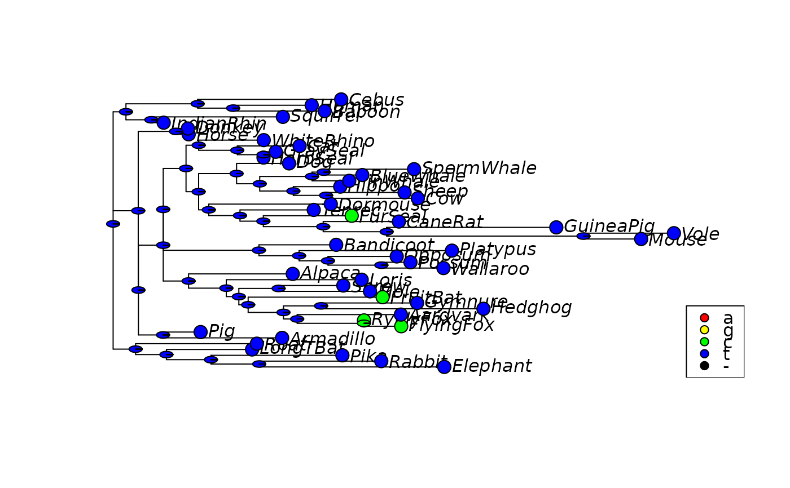

Export and convenience functions for ancestral reconstructions
Source:R/ancestral.R
write.ancestral.Rdwrite.ancestral allows to export ancestral reconstructions. It writes
out the tree, a tab delimited text file with the probabilities and the
alignment. ancestral generates an object of class ancestral.
Usage
write.ancestral(x, file = "ancestral")
as.ancestral(tree, align, prob)
# S3 method for class 'ancestral'
print(x, ...)Details
This allows also to read in reconstruction made by iqtree to use the plotting capabilities of R.
Examples
data(Laurasiatherian)
fit <- pml_bb(Laurasiatherian[,1:100], "JC", rearrangement = "none")
#> optimize edge weights: -2135.629 --> -2126.584
#> optimize edge weights: -2126.584 --> -2126.584
#> optimize edge weights: -2126.584 --> -2126.584
anc_ml <- anc_pml(fit)
write.ancestral(anc_ml)
# Can be also results from iqtree
align <- read.phyDat("ancestral_align.fasta", format="fasta")
tree <- read.tree("ancestral_tree.nwk")
df <- read.table("ancestral.state", header=TRUE)
anc_ml_disc <- as.ancestral(tree, align, df)
plotAnc(anc_ml_disc, 20)

unlink(c("ancestral_align.fasta", "ancestral_tree.nwk", "ancestral.state"))